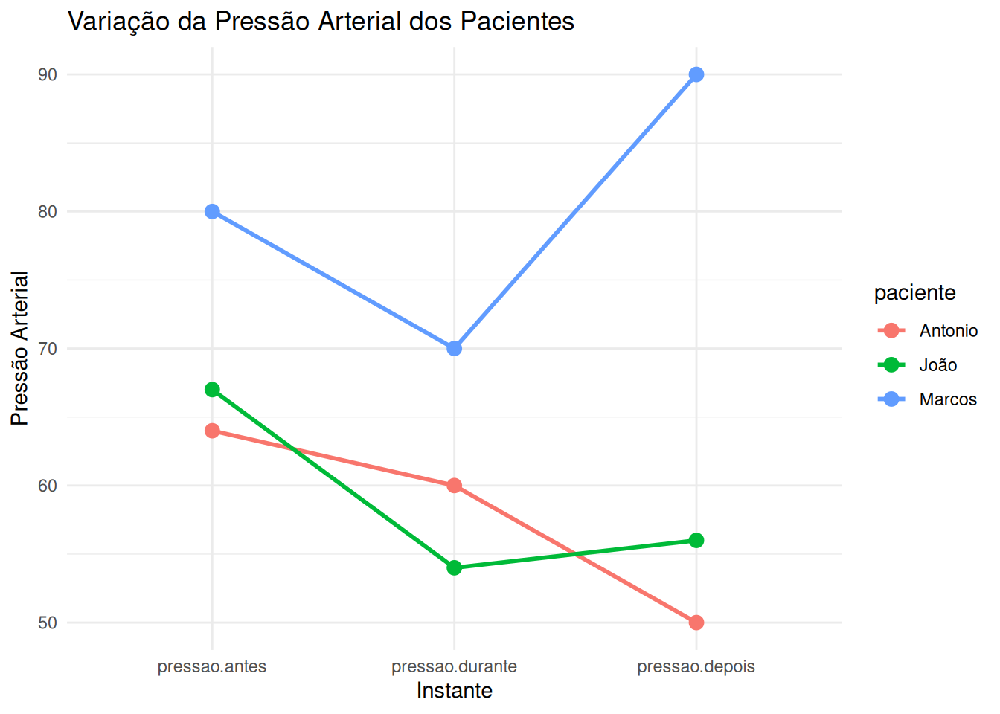

2 * 7[1] 140 / 0[1] NaN10^1000[1] Inflog(1)[1] 0exp(1)[1] 2.718282Aqui faremos uma breve introdução ao R. Para uma introdução mais detalhada, veja https://curso-r.com/material/ e https://r4ds.had.co.nz/.
O R propriamente dito é só o motor que executa os comandos; na prática, escrevemos o código em um editor que conversa com esse motor. Ou seja, são dois programas diferentes: primeiro instale o R (https://cran.r-project.org), depois um dos ambientes abaixo. Todos são gratuitos e rodam em Windows, macOS e Linux.
languageserver. É a opção que exige mais configuração inicial.Se você não tem preferência, comece pelo RStudio (é o caminho mais curto) ou pelo Positron (se quiser um único programa para os capítulos em R e os em Python).
Vale notar que nenhuma dessas escolhas muda o que o código faz: o R é o mesmo nos três, e todo o código deste livro roda igual em qualquer um deles. Os três também abrem os arquivos .qmd (Quarto) em que este livro foi escrito — RStudio e Positron já vêm com suporte a Quarto, e no VS Code basta instalar a extensão Quarto.
Aqui vão alguns exemplos para começarmos a entender como o R funciona. Inicialmente, veremos como podemos usar o R como calculadora.
Repare em duas saídas especiais: 0/0 devolve NaN (de not a number, uma conta sem resultado definido) e 10^1000 devolve Inf, porque o resultado é grande demais para ser representado. O R não interrompe a execução nesses casos — ele segue em frente carregando esses valores, então vale ficar atento quando eles aparecem.
Para entender o que uma função faz, você pode digitar o símbolo de interrogação seguido do nome da função, por exemplo:
O help contém as seguintes informações:
Podemos também armazenar resultados de contas em variáveis. Por exemplo:
<- ou =?
O R aceita os dois símbolos para atribuir um valor a uma variável: x <- 2 e x = 2 fazem a mesma coisa. Por convenção, usa-se <- para atribuição e reserva-se o = para nomear argumentos de funções, como em seq(from = 1, to = 10). É essa convenção que seguiremos no livro todo. No RStudio e no Positron, o atalho alt + - escreve <- de uma vez.
Números grandes são impressos usando notação científica:
Para listar quais variáveis estão declaradas no ambiente, podemos usar:
Para remover uma variável:
Para remover todas as variáveis existentes:
Alguns operadores lógicos definidos no R são mostrados na tabela abaixo:
| # | Operador | Descrição |
|---|---|---|
| 1 | x < y | x menor que y? |
| 2 | x <= y | x menor ou igual a y? |
| 3 | x > y | x maior que y? |
| 4 | x >= y | x maior ou igual a y? |
| 5 | x == y | x igual a y? |
| 6 | x != y | x diferente de y? |
| 7 | !x | Negativa de x |
| 8 | x | y | x ou y são verdadeiros? |
| 9 | x & y | x e y são verdadeiros? |
| 10 | xor(x, y) | Apenas um dos dois é verdadeiro? |
[1] FALSE[1] TRUE[1] TRUE[1] FALSE[1] TRUE[1] TRUE[1] FALSE[1] FALSE[1] TRUEO número um tem o valor verdadeiro, e o número zero tem o valor falso:
Note que ao fazermos contas com variáveis lógicas, elas são transformadas em zero e um:
Para declarar cadeias de caracteres, usamos aspas no R:
Várias operações podem ser feitas com esses objetos. Um exemplo é a função paste:
Usualmente declaramos vetores usando o operador c (concatenação):
Para acessar seus componentes, fazemos:
As operações x[c(2, 3)] e x[-c(2, 3)] são chamadas de subsetting; subsetting é a seleção de um subconjunto de um objeto. O índice positivo indica quais elementos manter, e o negativo indica quais descartar. Veremos mais à frente outras maneiras de fazermos isso.
O primeiro elemento de um vetor é x[1], não x[0]. Se você também usa Python, cuidado: lá a contagem começa em 0.
Podemos mudar alguns dos valores deste vetor usando:
Operações aritméticas podem ser facilmente feitas para cada elemento de um vetor. Alguns exemplos:
Uma função útil para criar vetores é a seq:
[1] 1 3 5 7 9 11 13 15 17 19 21 23 25 27 29 31 33 35 37 39 41 43 45 47 49
[26] 51 53 55 57 59 61 63 65 67 69 71 73 75 77 79 81 83 85 87 89 91 93 95 97 99[1] 1.00 25.75 50.50 75.25 100.00Podemos também usar operadores lógicos em vetores:
[1] FALSE FALSE FALSE TRUE TRUE TRUE TRUE TRUE TRUE TRUE TRUE TRUE
[13] TRUE TRUE TRUE TRUE TRUE TRUE TRUE TRUE TRUE TRUE TRUE TRUE
[25] TRUE TRUE TRUE TRUE TRUE TRUE TRUE TRUE TRUE TRUE TRUE TRUE
[37] TRUE TRUE TRUE TRUE TRUE TRUE TRUE TRUE TRUE TRUE TRUE TRUE
[49] TRUE TRUENote que x > 5 é um vetor lógico.
Podemos usar as operações lógicas em vetores lógicos:
[1] TRUE TRUE TRUE FALSE[1] TRUE FALSE FALSE FALSEOperadores lógicos também podem ser usados para fazer subsetting. A ideia é que x[condicao] seleciona os elementos de x nas posições em que condicao vale TRUE:
[1] 2 0 0 0[1] -1 0 0 0Podemos ter vetores de caracteres:
[1] "a"[1] "a add" "c add" "fgh add"[1] "a add+c add+fgh add"Algumas funções adicionais úteis:
Para declarar funções em R, fazemos:
Por exemplo:
Note que x e y podem ser vetores:
Você pode inverter a ordem dos argumentos, desde que eles sejam nomeados:
Os argumentos podem ter valores default. Por exemplo:
Neste caso, se o argumento y não for fornecido, ele será um vetor de uns do tamanho de x:
Para calcular o fatorial de um número n, podemos usar um laço while:
[1] 24Ou podemos usar um laço for:
Lembre-se de que laços podem ser lentos no R, especialmente se o tamanho do objeto não for previamente declarado. Vamos comparar o tempo de execução de diferentes abordagens usando a função system.time. Para isso, vamos calcular a soma acumulada de um vetor.
aux <- function(x) {
soma_acumulada <- NULL
soma_acumulada[1] <- x[1]
for(i in 2:length(x)) {
soma_acumulada[i] <- soma_acumulada[i - 1] + x[i]
}
}
system.time(aux(x))[1]user.self
0.029 aux <- function(x) {
soma_acumulada <- rep(NA, length(x))
soma_acumulada[1] <- x[1]
for(i in 2:length(x)) {
soma_acumulada[i] <- soma_acumulada[i - 1] + x[i]
}
}
system.time(aux(x))[1]user.self
0.016 Note que, em geral, funções nativas do R são muito mais rápidas.
O R permite o uso de condicionais if e else para controlar o fluxo de execução. A sintaxe básica é:
if (condição1) {
# código se a condição1 for verdadeira
} else if (condição2) {
# código se a condição1 for falsa e condição2 verdadeira
} else {
# código se todas as condições forem falsas
}Exemplo:
Listas são como vetores, mas podem conter componentes de diferentes tipos (inclusive outras listas).
Você também pode atribuir nomes aos elementos de uma lista:
minha_lista <- list(primeiro = "um", segundo = TRUE, terceiro = 3,
quarto = c("q", "u", "a", "t", "r", "o"), quinto = "cinco")
minha_lista$quinto[1] "cinco"Listas são frequentemente usadas para retornar várias saídas de uma função. Por exemplo, ao ajustar um modelo de regressão linear, os resultados são armazenados em uma lista:
set.seed(42) # fixa a semente para que os números sorteados sejam sempre os mesmos
x <- rnorm(100)
y <- 1 + 2*x + rnorm(length(x), sd = 0.1)
ajuste <- lm(y ~ x)
typeof(ajuste)[1] "list"Os componentes da lista podem ser acessados com:
[1] "coefficients" "residuals" "effects" "rank"
[5] "fitted.values" "assign" "qr" "df.residual"
[9] "xlevels" "call" "terms" "model" Para ver os coeficientes ajustados:
Para adicionar a reta estimada ao gráfico:
Você também pode inicializar uma lista vazia:
O R é uma ferramenta poderosa para realizar análises descritivas. Vamos explorar alguns recursos para calcular estatísticas de variáveis quantitativas e qualitativas.
[1] 22.66667[1] 448.6667[1] 1[1] 2[1] 60[1] 6[1] 1 5 20 20 30 60[1] 2 4 3 5 1 6[1] 20[1] 0.5229211[1] 1 3 5 6[1] 14Podemos utilizar subsetting para trabalhar com subconjuntos de interesse. Por exemplo, suponha que dados é um banco de dados com informações de alunos e queremos selecionar os alunos com idade menor que 20, altura maior que 1,70 e que estejam no primeiro ou segundo ano.
As funções da família apply (como apply, lapply, sapply) são úteis para aplicar uma função a um conjunto de dados. Vamos criar um banco de dados artificial para exemplificar:
applyPara calcular a média de cada coluna de dados, usamos:
Aqui, o argumento 2 indica que a operação deve ser aplicada a cada coluna. Para calcular a soma de cada linha:
[1] 3651.544 3582.847 2573.923 4010.593 2716.955 3101.684 2853.897 2988.803
[9] 3163.372 3118.475 3046.037 3152.070 2809.560 2806.243 2234.647 2874.986
[17] 2801.507 4407.787 2360.400 3126.497 2316.036 2309.642 3117.095 2560.945
[25] 3078.218 2842.231 2757.669 2033.823 2445.554 3158.853 3345.572 2829.316
[33] 3056.668 3613.599 3782.070 2496.371 3010.379 3655.595 2811.395 3025.802
[41] 3012.337 2624.742 2856.902 3053.734 2830.608 3641.509 2825.030 2854.746
[49] 3413.561 2528.023 3032.207 2280.274 3644.145 2930.906 2840.901 2433.726
[57] 3054.825 2662.171 2762.728 3703.256 2979.521 2536.338 3150.831 2871.393
[65] 3350.430 3797.437 2575.404 3294.094 3083.279 3514.783 2944.538 3479.318
[73] 2194.736 3903.380 3485.715 3003.095 2346.931 3373.617 3310.235 3062.148
[81] 3156.060 2754.376 3240.547 3214.012 2913.408 2400.968 3434.607 3328.799
[89] 2628.635 2272.560 3166.827 2889.688 3184.065 2446.335 2572.380 3593.116
[97] 3253.276 3352.563 3970.364 3114.058Usando funções anônimas, podemos calcular várias estatísticas descritivas ao mesmo tempo:
estatisticas <- apply(dados, 2, function(x) {
lista_resultados <- list()
lista_resultados$media <- mean(x)
lista_resultados$media_aparada <- mean(x, trim = 0.1)
lista_resultados$mediana <- median(x)
lista_resultados$maximo <- max(x)
return(lista_resultados)
})
estatisticas$altura$media
[1] 1.706503
$media_aparada
[1] 1.717016
$mediana
[1] 1.717959
$maximo
[1] 2.157329%>% (pipe)O operador pipe foi uma das grandes revoluções recentes do R, tornando o código mais legível. Esse operador está definido no pacote magrittr, e vários outros pacotes, como o dplyr, fazem uso dele (veja a próxima seção).
A ideia é simples: o operador %>% usa o resultado do lado esquerdo como o primeiro argumento da função do lado direito. Um exemplo:
Isso é equivalente a:
Mas a leitura com pipe é mais clara. No RStudio e no Positron, você pode inserir o pipe com o atalho ctrl + shift + m.
O pipe envia o valor à esquerda apenas para o primeiro argumento da função à direita. Para utilizar o valor da esquerda em outro argumento, utilize o ".":
dplyrO pacote dplyr é muito útil para manipulação eficiente de data frames. Vamos demonstrar alguns exemplos usando o conjunto de dados hflights.
Primeiro, converta os dados para o formato tibble, uma variação mais amigável do data.frame:
A função filter retorna todas as linhas que satisfazem uma condição. Por exemplo, para mostrar todos os voos do dia 1º de janeiro:
# A tibble: 552 × 21
Year Month DayofMonth DayOfWeek DepTime ArrTime UniqueCarrier FlightNum
<int> <int> <int> <int> <int> <int> <chr> <int>
1 2011 1 1 6 1400 1500 AA 428
2 2011 1 1 6 728 840 AA 460
3 2011 1 1 6 1631 1736 AA 1121
4 2011 1 1 6 1756 2112 AA 1294
5 2011 1 1 6 1012 1347 AA 1700
6 2011 1 1 6 1211 1325 AA 1820
7 2011 1 1 6 557 906 AA 1994
8 2011 1 1 6 1824 2106 AS 731
9 2011 1 1 6 654 1124 B6 620
10 2011 1 1 6 1639 2110 B6 622
# ℹ 542 more rows
# ℹ 13 more variables: TailNum <chr>, ActualElapsedTime <int>, AirTime <int>,
# ArrDelay <int>, DepDelay <int>, Origin <chr>, Dest <chr>, Distance <int>,
# TaxiIn <int>, TaxiOut <int>, Cancelled <int>, CancellationCode <chr>,
# Diverted <int>Para condições alternativas, podemos usar o operador | (ou) ou %in%:
# A tibble: 5,316 × 21
Year Month DayofMonth DayOfWeek DepTime ArrTime UniqueCarrier FlightNum
<int> <int> <int> <int> <int> <int> <chr> <int>
1 2011 1 1 6 1400 1500 AA 428
2 2011 1 2 7 1401 1501 AA 428
3 2011 1 3 1 1352 1502 AA 428
4 2011 1 4 2 1403 1513 AA 428
5 2011 1 5 3 1405 1507 AA 428
6 2011 1 6 4 1359 1503 AA 428
7 2011 1 7 5 1359 1509 AA 428
8 2011 1 8 6 1355 1454 AA 428
9 2011 1 9 7 1443 1554 AA 428
10 2011 1 10 1 1443 1553 AA 428
# ℹ 5,306 more rows
# ℹ 13 more variables: TailNum <chr>, ActualElapsedTime <int>, AirTime <int>,
# ArrDelay <int>, DepDelay <int>, Origin <chr>, Dest <chr>, Distance <int>,
# TaxiIn <int>, TaxiOut <int>, Cancelled <int>, CancellationCode <chr>,
# Diverted <int>A função select seleciona colunas específicas de um data frame. Para selecionar as colunas DepTime, ArrTime, e FlightNum:
# A tibble: 227,496 × 3
DepTime ArrTime FlightNum
<int> <int> <int>
1 1400 1500 428
2 1401 1501 428
3 1352 1502 428
4 1403 1513 428
5 1405 1507 428
6 1359 1503 428
7 1359 1509 428
8 1355 1454 428
9 1443 1554 428
10 1443 1553 428
# ℹ 227,486 more rowsPara selecionar todas as colunas que contêm “Taxi” ou “Delay”:
A função arrange ordena o data frame de acordo com algum critério. Para ordenar pelo atraso de partida (DepDelay):
# A tibble: 227,496 × 21
Year Month DayofMonth DayOfWeek DepTime ArrTime UniqueCarrier FlightNum
<int> <int> <int> <int> <int> <int> <chr> <int>
1 2011 12 24 6 1112 1314 OO 5440
2 2011 2 14 1 1917 2027 MQ 3328
3 2011 4 10 7 2101 2206 XE 2669
4 2011 8 3 3 1741 1810 XE 2603
5 2011 1 18 2 1542 1936 CO 1688
6 2011 10 4 2 1438 1813 EV 5412
7 2011 1 26 3 2248 2343 XE 2450
8 2011 3 8 2 953 1156 CO 1882
9 2011 3 18 5 2103 2156 XE 2261
10 2011 4 3 7 1048 1307 MQ 3796
# ℹ 227,486 more rows
# ℹ 13 more variables: TailNum <chr>, ActualElapsedTime <int>, AirTime <int>,
# ArrDelay <int>, DepDelay <int>, Origin <chr>, Dest <chr>, Distance <int>,
# TaxiIn <int>, TaxiOut <int>, Cancelled <int>, CancellationCode <chr>,
# Diverted <int>Para ordem decrescente:
# A tibble: 227,496 × 21
Year Month DayofMonth DayOfWeek DepTime ArrTime UniqueCarrier FlightNum
<int> <int> <int> <int> <int> <int> <chr> <int>
1 2011 8 1 1 156 452 CO 1
2 2011 12 12 1 650 808 AA 1740
3 2011 11 8 2 721 948 MQ 3786
4 2011 6 21 2 2334 124 UA 855
5 2011 6 9 4 2029 2243 MQ 3859
6 2011 5 20 5 858 1027 MQ 3328
7 2011 1 20 4 635 807 CO 59
8 2011 6 22 3 908 1040 CO 595
9 2011 10 25 2 2310 149 DL 1215
10 2011 12 13 2 706 824 MQ 3328
# ℹ 227,486 more rows
# ℹ 13 more variables: TailNum <chr>, ActualElapsedTime <int>, AirTime <int>,
# ArrDelay <int>, DepDelay <int>, Origin <chr>, Dest <chr>, Distance <int>,
# TaxiIn <int>, TaxiOut <int>, Cancelled <int>, CancellationCode <chr>,
# Diverted <int>A função mutate cria novas variáveis. Para criar a variável Speed (velocidade) e adicioná-la ao banco:
A função summarise calcula estatísticas resumo. Para calcular o atraso médio de chegada por destino:
# A tibble: 116 × 2
Dest avg_delay
<chr> <dbl>
1 ABQ 7.23
2 AEX 5.84
3 AGS 4
4 AMA 6.84
5 ANC 26.1
6 ASE 6.79
7 ATL 8.23
8 AUS 7.45
9 AVL 9.97
10 BFL -13.2
# ℹ 106 more rowsA função across, usada dentro de summarise, aplica uma função a várias colunas ao mesmo tempo. Para calcular a média de Cancelled e Diverted por companhia aérea:
# A tibble: 15 × 3
UniqueCarrier Cancelled Diverted
<chr> <dbl> <dbl>
1 AA 0.0185 0.00185
2 AS 0 0.00274
3 B6 0.0259 0.00576
4 CO 0.00678 0.00263
5 DL 0.0159 0.00303
6 EV 0.0345 0.00318
7 F9 0.00716 0
8 FL 0.00982 0.00327
9 MQ 0.0290 0.00194
10 OO 0.0139 0.00349
11 UA 0.0164 0.00241
12 US 0.0113 0.00147
13 WN 0.0155 0.00229
14 XE 0.0155 0.00345
15 YV 0.0127 0 Também podemos aplicar várias funções a uma mesma coluna:
flights %>% group_by(UniqueCarrier) %>%
summarise(across(c(Cancelled, Diverted), list(media = mean, variancia = var)))# A tibble: 15 × 5
UniqueCarrier Cancelled_media Cancelled_variancia Diverted_media
<chr> <dbl> <dbl> <dbl>
1 AA 0.0185 0.0182 0.00185
2 AS 0 0 0.00274
3 B6 0.0259 0.0253 0.00576
4 CO 0.00678 0.00674 0.00263
5 DL 0.0159 0.0157 0.00303
6 EV 0.0345 0.0333 0.00318
7 F9 0.00716 0.00712 0
8 FL 0.00982 0.00973 0.00327
9 MQ 0.0290 0.0282 0.00194
10 OO 0.0139 0.0138 0.00349
11 UA 0.0164 0.0161 0.00241
12 US 0.0113 0.0111 0.00147
13 WN 0.0155 0.0153 0.00229
14 XE 0.0155 0.0153 0.00345
15 YV 0.0127 0.0127 0
# ℹ 1 more variable: Diverted_variancia <dbl>Além disso, podemos usar funções anônimas (com ~ e .x) para passar argumentos extras:
flights %>% group_by(UniqueCarrier) %>%
summarise(across(matches("Delay"),
list(min = ~min(.x, na.rm = TRUE), max = ~max(.x, na.rm = TRUE))))# A tibble: 15 × 5
UniqueCarrier ArrDelay_min ArrDelay_max DepDelay_min DepDelay_max
<chr> <int> <int> <int> <int>
1 AA -39 978 -15 970
2 AS -43 183 -15 172
3 B6 -44 335 -14 310
4 CO -55 957 -18 981
5 DL -32 701 -17 730
6 EV -40 469 -18 479
7 F9 -24 277 -15 275
8 FL -30 500 -14 507
9 MQ -38 918 -23 931
10 OO -57 380 -33 360
11 UA -47 861 -11 869
12 US -42 433 -17 425
13 WN -44 499 -10 548
14 XE -70 634 -19 628
15 YV -32 72 -11 54Por fim, podemos realizar agrupamentos múltiplos:
flights %>% group_by(UniqueCarrier, DayOfWeek) %>%
summarise(across(matches("Delay"),
list(min = ~min(.x, na.rm = TRUE), max = ~max(.x, na.rm = TRUE))),
.groups = "drop")# A tibble: 105 × 6
UniqueCarrier DayOfWeek ArrDelay_min ArrDelay_max DepDelay_min DepDelay_max
<chr> <int> <int> <int> <int> <int>
1 AA 1 -30 978 -14 970
2 AA 2 -30 265 -12 286
3 AA 3 -33 179 -15 168
4 AA 4 -38 663 -15 653
5 AA 5 -28 255 -13 234
6 AA 6 -39 685 -13 677
7 AA 7 -34 507 -15 525
8 AS 1 -30 183 -12 172
9 AS 2 -34 92 -12 68
10 AS 3 -29 123 -12 138
# ℹ 95 more rowsggplot2Nota: Esta seção foi adaptada de curso-r.com.
O ggplot2 é um pacote do R voltado para a criação de gráficos estatísticos. Ele é baseado na Gramática dos Gráficos (Grammar of Graphics) de Leland Wilkinson. Segundo essa gramática, um gráfico estatístico é um mapeamento dos dados por meio de atributos estéticos (cores, formas, tamanho) de formas geométricas (pontos, linhas, barras).
Vamos discutir os aspectos básicos para a construção de gráficos com o ggplot2, utilizando o conjunto de dados mtcars. Para visualizar as primeiras linhas:
mpg cyl disp hp drat wt qsec vs am gear carb
Mazda RX4 21.0 6 160 110 3.90 2.620 16.46 0 1 4 4
Mazda RX4 Wag 21.0 6 160 110 3.90 2.875 17.02 0 1 4 4
Datsun 710 22.8 4 108 93 3.85 2.320 18.61 1 1 4 1
Hornet 4 Drive 21.4 6 258 110 3.08 3.215 19.44 1 0 3 1
Hornet Sportabout 18.7 8 360 175 3.15 3.440 17.02 0 0 3 2
Valiant 18.1 6 225 105 2.76 3.460 20.22 1 0 3 1Os gráficos no ggplot2 são construídos camada por camada. A primeira camada é criada com a função ggplot. Um exemplo de gráfico simples:
A função aes define o mapeamento entre as variáveis e os aspectos visuais. Neste caso, estamos criando um gráfico de dispersão (com geom_point) entre disp (cilindradas) e mpg (milhas por galão).
Podemos mapear variáveis a diferentes aspectos estéticos, como cor e tamanho. Por exemplo, para mapear a variável am (transmissão) para a cor dos pontos:
Os geoms definem as formas geométricas usadas para a visualização dos dados. Além de geom_point, podemos usar:
geom_line para linhasgeom_boxplot para boxplotsgeom_histogram para histogramasExemplo de um boxplot:
Para mudar as cores do gráfico, podemos usar o argumento colour ou fill:
Para alterar os rótulos dos eixos:
Podemos personalizar ou remover legendas facilmente:
O facet_grid permite dividir o gráfico em subgráficos com base em uma variável:
Podemos mudar o tema de um gráfico com a função theme_set:
tidyrO pacote tidyr facilita a transformação e organização de dados no R. Para converter os dados de formato “wide” (largo) para “long” (longo), podemos utilizar a função pivot_longer, que substitui a antiga função gather. Considere os dados a seguir:
dados_originais <- data.frame(
paciente = c("João", "Marcos", "Antonio"),
pressao.antes = c(67, 80, 64),
pressao.durante = c(54, 70, 60),
pressao.depois = c(56, 90, 50)
)
dados_originais paciente pressao.antes pressao.durante pressao.depois
1 João 67 54 56
2 Marcos 80 70 90
3 Antonio 64 60 50Para reorganizar esses dados em um formato “long”, usando pivot_longer:
library(tidyr)
dados_novo_formato <- dados_originais %>%
pivot_longer(cols = pressao.antes:pressao.depois,
names_to = "instante",
values_to = "pressao.arterial")
dados_novo_formato# A tibble: 9 × 3
paciente instante pressao.arterial
<chr> <chr> <dbl>
1 João pressao.antes 67
2 João pressao.durante 54
3 João pressao.depois 56
4 Marcos pressao.antes 80
5 Marcos pressao.durante 70
6 Marcos pressao.depois 90
7 Antonio pressao.antes 64
8 Antonio pressao.durante 60
9 Antonio pressao.depois 50A função pivot_wider é usada para converter dados de formato “long” (longo) para “wide” (largo), espalhando uma variável por várias colunas. Vamos começar com um conjunto de dados em formato “long” e então reorganizá-los para o formato “wide”.
Considere o conjunto de dados dados_novo_formato que organizamos anteriormente:
dados_novo_formato <- data.frame(
paciente = c("João", "Marcos", "Antonio", "João", "Marcos", "Antonio", "João", "Marcos", "Antonio"),
instante = c("pressao.antes", "pressao.antes", "pressao.antes", "pressao.durante", "pressao.durante", "pressao.durante", "pressao.depois", "pressao.depois", "pressao.depois"),
pressao.arterial = c(67, 80, 64, 54, 70, 60, 56, 90, 50)
)
dados_novo_formato paciente instante pressao.arterial
1 João pressao.antes 67
2 Marcos pressao.antes 80
3 Antonio pressao.antes 64
4 João pressao.durante 54
5 Marcos pressao.durante 70
6 Antonio pressao.durante 60
7 João pressao.depois 56
8 Marcos pressao.depois 90
9 Antonio pressao.depois 50Agora, vamos usar pivot_wider para transformar esses dados de volta ao formato “wide”:
dados_wide <- dados_novo_formato %>%
pivot_wider(names_from = instante, values_from = pressao.arterial)
dados_wide# A tibble: 3 × 4
paciente pressao.antes pressao.durante pressao.depois
<chr> <dbl> <dbl> <dbl>
1 João 67 54 56
2 Marcos 80 70 90
3 Antonio 64 60 50Temos os seguintes argumentos:
names_from especifica a coluna cujos valores serão usados para criar novos nomes de colunas (neste caso, a variável instante).values_from especifica a coluna cujos valores serão preenchidos nas novas colunas criadas (neste caso, a variável pressao.arterial).pivot_longer e ggplot2O pacote tidyr é particularmente útil em conjunto com o ggplot2. Vamos continuar com o exemplo dos dados de pressão arterial. Suponha que você queira visualizar as variações da pressão arterial dos pacientes em diferentes instantes.
Primeiro, vamos reorganizar os dados usando pivot_longer para colocar os dados no formato “long”, que é mais adequado para gráficos com o ggplot2:
library(tidyr)
library(ggplot2)
# Dados originais no formato "wide"
dados_originais <- data.frame(
paciente = c("João", "Marcos", "Antonio"),
pressao.antes = c(67, 80, 64),
pressao.durante = c(54, 70, 60),
pressao.depois = c(56, 90, 50)
)
dados_originais paciente pressao.antes pressao.durante pressao.depois
1 João 67 54 56
2 Marcos 80 70 90
3 Antonio 64 60 50Para usá-los no ggplot, vamos reorganizá-los no formato “long”:
dados_long <- dados_originais %>%
pivot_longer(cols = pressao.antes:pressao.depois,
names_to = "instante",
values_to = "pressao.arterial")
dados_long# A tibble: 9 × 3
paciente instante pressao.arterial
<chr> <chr> <dbl>
1 João pressao.antes 67
2 João pressao.durante 54
3 João pressao.depois 56
4 Marcos pressao.antes 80
5 Marcos pressao.durante 70
6 Marcos pressao.depois 90
7 Antonio pressao.antes 64
8 Antonio pressao.durante 60
9 Antonio pressao.depois 50Agora, vamos criar um gráfico de linhas que mostra as mudanças na pressão arterial ao longo do tempo para cada paciente. Note que estamos reordenando o eixo x para levar em conta o caráter temporal do problema.
ggplot(dados_long, aes(x = factor(instante, levels = c("pressao.antes", "pressao.durante", "pressao.depois")),
y = pressao.arterial, group = paciente, color = paciente)) +
geom_line(linewidth = 1) +
geom_point(size = 3) +
labs(title = "Variação da Pressão Arterial dos Pacientes",
x = "Instante",
y = "Pressão Arterial") +
theme_minimal()
readrO readr é um pacote eficiente para leitura de arquivos de dados no R. Vamos explorar como utilizar o readr para ler e manipular arquivos CSV. Um arquivo CSV (Comma-Separated Values) é um formato comum para armazenar dados tabulares.
Para começar, carregue o pacote readr:
Vamos usar um banco de dados público disponível na internet. Um exemplo muito comum é o conjunto de dados de passageiros do Titanic, disponível em formato CSV. Para carregar diretamente da internet:
Aqui, estamos carregando os dados diretamente de um link. Após a leitura, podemos visualizar os primeiros registros:
# A tibble: 6 × 12
PassengerId Survived Pclass Name Sex Age SibSp Parch Ticket Fare Cabin
<dbl> <dbl> <dbl> <chr> <chr> <dbl> <dbl> <dbl> <chr> <dbl> <chr>
1 1 0 3 Braund… male 22 1 0 A/5 2… 7.25 <NA>
2 2 1 1 Cuming… fema… 38 1 0 PC 17… 71.3 C85
3 3 1 3 Heikki… fema… 26 0 0 STON/… 7.92 <NA>
4 4 1 1 Futrel… fema… 35 1 0 113803 53.1 C123
5 5 0 3 Allen,… male 35 0 0 373450 8.05 <NA>
6 6 0 3 Moran,… male NA 0 0 330877 8.46 <NA>
# ℹ 1 more variable: Embarked <chr>O read_csv detecta automaticamente os tipos de dados de cada coluna. No exemplo dos dados do Titanic, podemos realizar algumas análises rápidas, como visualizar a distribuição de sobreviventes:
Se você quiser salvar o conjunto de dados em seu computador após manipulações, basta usar o write_csv:
Exercício 1. Execute as seguintes operações no R e interprete os resultados:
Utilize a função log para calcular o logaritmo natural de 10 e depois o logaritmo na base 10 de 1000.
Descubra a função que calcula a raiz quadrada de um número utilizando o símbolo de interrogação (?), e aplique-a ao número 144.
Exercício 2. Armazene o resultado de \(15 \times 7\) em uma variável chamada resultado. Use resultado para calcular o valor de \(2 \times resultado\).
Liste todas as variáveis no ambiente do R usando a função ls(). Exclua a variável resultado e verifique novamente as variáveis presentes.
Exercício 3. Crie um vetor v contendo os números 4, 8, 15, 16, 23, 42. Use subsetting para selecionar:
Multiplique cada elemento do vetor v por 2 e armazene o resultado em um novo vetor v2.
Exercício 4. Verifique se 8 é maior que 5 e se 8 é igual a 10.
Crie dois vetores lógicos a = c(TRUE, FALSE, TRUE) e b = c(FALSE, TRUE, FALSE). Aplique os operadores &, | e xor() nesses vetores.
Exercício 5. Escreva uma função soma_quadrados que receba dois números como argumentos e retorne a soma de seus quadrados. Teste sua função com os números 3 e 4.
Modifique a função soma_quadrados para que o segundo argumento tenha um valor padrão de 2. Teste a função chamando-a com apenas um argumento.
Exercício 6. Escreva um laço for que calcule a soma dos números de 1 a 100.
Crie um laço while que multiplique os números de 1 a 6 e retorne o resultado.
Exercício 7. Crie duas variáveis com o seu primeiro e último nome. Use a função paste() para juntar as duas variáveis em uma frase que diga “Meu nome completo é [nome completo]”.
Altere o separador na função paste() para um traço - e junte novamente as variáveis.
Exercício 8. Carregue o pacote dplyr e use o dataset mtcars. Selecione apenas as colunas mpg, cyl, e hp.
Filtre as observações onde mpg é maior que 20 e hp é menor que 150.
Ordene o dataset filtrado pela coluna mpg em ordem decrescente.
Exercício 9. Usando o dataset mtcars, crie um gráfico de dispersão (geom_point) que mostre a relação entre hp (horsepower) e mpg (milhas por galão).
No gráfico anterior, mapeie a variável cyl para a cor dos pontos.
Exercício 10. Utilize a base pública de dados de voos da nycflights13 para responder às perguntas abaixo.
Carregue o pacote nycflights13 e explore o dataset flights. Visualize as primeiras 6 linhas da base.
Filtre todos os voos que decolaram no mês de junho e aterrissaram com atraso maior que 1 hora.
Agrupe os dados por companhia aérea (carrier) e calcule o atraso médio de chegada (arr_delay) para cada companhia.
Crie um gráfico de barras que mostre o atraso médio de chegada por companhia aérea.